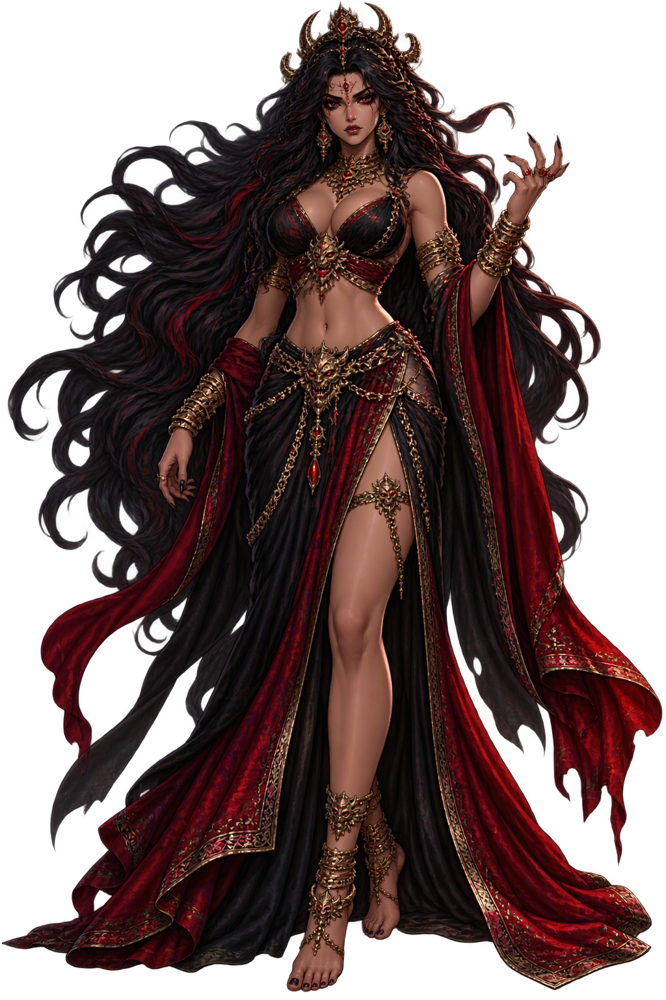

The Cult
None of her own; her ‘cult’ is the telling of her grandsons’ tales. The Holi festival’s Holikā-burning retells the Prahlāda cycle’s fire episode — the bound dynasty’s pyre, annually lit.
Extended Lore
Etymology · Orthography · Cult · Iconography · Reception · Sources

Essential information about Diti, Mother of Demons
From original script to Unicode restoration
The name Diti reaches the modern world through scholarly transliteration of the sanskrit tradition. Because the conventional spelling uses only Latin letters, its Unicode and ASCII forms coincide — the tradition it carries is in the name itself, not in diacritics.
Character-by-character philological analysis
| Character | Unicode | Name | Block | Phonetic Role |
|---|---|---|---|---|
| D | U+0044 | Latin Capital Letter D | Basic Latin | Same, capitalized |
| i | U+0069 | Latin Small Letter I | Basic Latin | Same |
| t | U+0074 | Latin Small Letter T | Basic Latin | Same |
| i | U+0069 | Latin Small Letter I | Basic Latin | Same |
This restoration reflects fidelity to the attested tradition, not recovered diacritics: every character of Diti already survives in ASCII. What the restoration preserves is the canonical spelling itself — the form scholarship standardised.
How the sacred was kept — rites, sanctuaries, remains
None of her own; her ‘cult’ is the telling of her grandsons’ tales. The Holi festival’s Holikā-burning retells the Prahlāda cycle’s fire episode — the bound dynasty’s pyre, annually lit.
Diti has no temples — her cult is narrative. But her sons’ defeat carved the great Narasiṃha reliefs of Ellora and Mamallapuram, and the Prahlāda panels of every medieval temple tell her line’s story in stone.
How Diti was imaged across the ages
Rarely imaged; when shown, a queen among the thirteen daughters of Dakṣa, or the wounded mother of the Purāṇic paintings. Her true icon is genealogical — the family-tree’s anti-branch.
The name after its own age — transmission, translation, survival
Comparative mythology cites the Aditi-Diti pair as the cleanest case of name-negation structuring a pantheon’s moral geography; and the Prahlāda cycle, her line’s redemption, is the standard text of bhakti theology’s triumph over birth. She remains the study of the anti-mother: maternity without a single maternal myth of her own.
Diti is the shadow-twin of Aditi — the Purāṇic genealogists built the whole deva-asura divide from the two sisters’ names. Her line’s fate — Hiraṇyakaśipu slain, Prahlāda saved — was read by the bhakti commentators as the triumph of devotion over lineage; and modern comparative study pairs her with the bound Titans of Greek genealogy.
The Prahlāda story, carried by her line, is the subcontinent’s most retold tale of devotional defiance — every schoolchild’s Sanskrit reader has it. The Daitya-vaṃśa genealogies structured the Purāṇas’ entire mythology of conflict; and the name Diti survives in modern India as a girl’s name, the bound one given with a prayer for release.
What Diti means — beyond the dictionary
Diti: the name that is Aditi with the freedom removed. Restored plainly, it stands as the lexicon’s reminder that every boundless has its bound — the anti-gods’ mother holds a name the schoolchild can spell and the theologian cannot exhaust. Two syllables, one negation, a dynasty of enemies.
Common questions about Diti, Mother of Demons, and Unicode restoration
In reconstructed pronunciation, Diti is /ˈdiːti/ — approximately “DEE-tee”.
Diti means Daughter of Dakṣa and wife of the sage Kaśyapa, mother of the Daityas, the demon race — the counterpart of her sister Aditi, who is mother of the gods. in the sanskrit tradition.
Diti is associated with Mother of the Daityas (Her sons are the Daityas — the anti-gods whose wars with the devas fill the Purāṇas.), Sister of Aditi (Daughter of Dakṣa, sister of the unfettered Aditi — her name is Aditi’s negated.), The Vajra Wound (Indra’s thunderbolt shattered her womb mid-pregnancy; the fragments became the Maruts.), Boons of Her Sons (Hiraṇyakaśipu’s boon made him deathless by day or night, indoors or out — until Narasiṃha.).
Diti is written entirely in ASCII letters, so its restoration is about canonical fidelity rather than recovered diacritics: the temple fixes the name in its scholarly standard spelling, attested in the source tradition, instead of leaving it to drift.
“The Maruts from the Broken Womb” — the Ṛgveda 1.99 story that anchors the mythology of Diti, told in full on the lore page.
The philological foundations of this restoration
Every claim on this page is grounded in established scholarship. The orthographic restorations follow disciplinary convention. The etymological chain follows the best available reference works. This is not invention — it is resurrection through scholarship.
You have traced the name from its earliest attestation to its Unicode restoration. Now return to the myth. The story is where the name lives.
Back to Lore